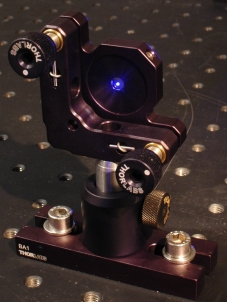
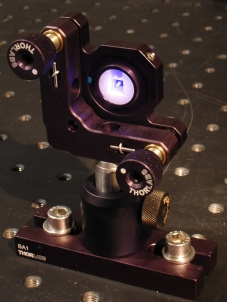
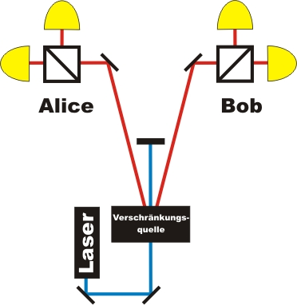

Verschränkung Kapitel 1:
Was ist Verschränkung?
Verschränkung findet immer zwischen zwei einzelnen Quantenobjekten statt. Von Verschränkung spricht man, wenn zwei einzelne Quantenobjekte auf bestimmte Weise miteinander verbunden sind. Die Quantenobjekte werden dazu in einer Quelle gemeinsam als Paar erzeugt. In unseren Experimenten verwenden wir als Quantenobjekte einzelne Photonen. Um den Unterschied zwischen verschränkten und nicht verschränkten Photonenpaaren zu erkennen, werden in unseren Experimenten zwei verschiedene Photonenquellen benutzt. Beide Quellen ezeugen die Photonen immer paarweise. In der einen Quelle (Abb. 1 links) sind die Photonenpaare verschränkt, in der anderen Quelle (Abb. 1 rechts) sind die Photonenpaare nicht verschränkt. Der genaue Unterschied zwischen den beiden Quellen wird in Kapitel_D erläutert.
 |
 |
Abb. 1 links: Quelle für verschränkte Photonenpaare.
Abb. 1 rechts: Quelle für nicht verschränkte Photonenpaare.
Erklärung der beiden Quellen in Kapitel_D.
Verschränkung: Experiment mit Einzelereignissen
Mit dem folgenden interaktiven Experiment soll der Unterschied zwischen verschränkten und nicht verschränkten Photonenpaaren herausgefunden werden. Das Experiment ist ähnlich aufgebaut wie der bekannte Quantenzufallsgenerator. Die Grundlage des Quantenzufallsgenerators ist ein symmetrischer Strahlteilerwürfel, an dem 50% aller eintreffenden Photonen transmittiert und 50% aller eintreffenden Photonen reflektiert werden. Die Entscheidung welches Photon transmittiert und welches reflektiert wird kann über die Polarisation des Photons erfolgen und ist ein reiner Zufallsprozess.
Da die Photonen immer paarweise auftreten werden zwei Quantenzufallsgeneratoren benötigt. Ein Quantenzufallsgenerator steht auf der Seite von Alice und der andere Quantenzufallsgenerator steht auf der Seite von Bob (Abb. 2). Das eine Photon wird auf der Seite von Alice am Strahlteiler entweder transmittiert oder reflektiert. Das andere Photon wird auf der Seite von Bob am Strahlteiler entweder transmittiert oder reflektiert.

Abb. 2: Aufbau des Experiments:
Quantenzufallsgenerator bei Alice und bei Bob
a) Im interaktiven Experimnet können die Detektionsereignisse auf beiden Seiten zunächst einzeln betrachtet werden. Hierfür gibt es die Einstellung "Ansicht Alice" und "Ansicht Bob". Gleichzeitig kann mit der Quelle gewählt werden, ob die Photonen verschränkt oder nicht verschränkt sind. Führen Sie das Experiment einige male durch. Gibt es bei der Betrachtung der Seite von Alice oder der Seite von Bob einen Unterschied zwischen verschränkten und nicht verschränkten Photonen?
b) Schalten Sie nun auf "Ansicht: Alice & Bob" und wählen Sie wieder zwischen den beiden Photonenquellen. Ist ein Unterschied zwischen verschränkten und nicht verschränkten Photonenenpaaren erkennbar? Zur richtigen Darstellung wird der neuste Flash-Player (Version 9 - Freeware) benötigt [Download].
Beobachtung und Erklärung:
zu a)
Wird im interaktiven Experiment zunächst nur die Seite von Alice oder nur die Seite von Bob betrachtet, kann mit dem Messergbnis nicht unterschieden werden, ob die Photonen verschränkt oder nicht verschränkt sind. Jedes Photon wird zufällig entweder transmittiert oder reflektiert.zu b)
Photonenpaare nicht verschränkt:
Mit der Einstellung "Ansicht Alice & Bob" und nicht verschränkten Photonenpaaren können keine Zusammenhänge zwischen den Zufallsentscheidungen bei Alice und Bob festgestellt werden. Jedes Photon des Photonenpaares wird am Strahlteiler zufällig refklektiert oder transmittiert. Alice und Bob besitzen somit zwei Zufallsprozesse die komplett unabhängig voneinander sind.
Photonenpaare verschränkt:
Verblüffend wird es mit verschränkten Photonen: Die Zufallsentscheidungen sind auf beiden Seiten exakt die gleichen! Wird das Photon bei Alice refeklektiert, so wird auch das Photon bei Bob reflektiert. Wird das Photon bei Alice transmittiert, so wird auch das Photon bei Bob transmittiert. Wenn z. B. bei Alice das Photon reflektiert wird, so kennt Alice das Verhalten des anderen Photons bei Bob. Alice und Bob besitzen zwei Zufallsprozesse die auf bestimmte Weise miteinander verbunden sind. Alice und Bob könnten dabei räumlich beliebig weit entfernt sein: Sobald das eine Photon am polarisierenden symmetrischen Strahlteiler transmittiert oder refklektiert wird, macht das andere Photon exakt das gleiche.Zeigen verschränkte Photonenpaare dieses gemeinsame Verhalten auch bei anderen Einstellungen am polarisierenden Strahlteilerwürfel? Wie sieht die Zufallsentscheidung z. B. beim Teilungsverhältnis 60% zu 40% aus? Im nächsten Kapitel kann das Strahlteilerverhältnis verändert werden (Kapitel 2).
Hinweis: Durch Ungenauigkeiten und Messfehler sind in unseren Experimenten nur ca. 96% aller Photonenpaare verschränkt. Um für die Schulanwendung klare Aussagen machen zu können, werden im interaktiven Experiment nur die 96% verschränkten Photonen angezeigt. Im Bereich für die Universität können die gleichen interaktiven Experimente mit Messfehlern und kontinuierlicher Datenrate durchgeführt werden (Kapitel_A).
Originaldaten aus dem Experiment: Einzelereignisse_50/50% (inkl. Messfehler)
Zum Kapitel 2: Wie verhalten sich verschränkte Photonen bei verschiedenen Messungen? [klick]
Zurück zur Übersicht [klick].
Autor: P. Bronner, Mai 2008